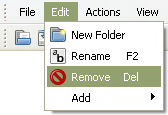

This topic will help you get started with your first custom CD project. InfraRecorder currently supports three kinds of projects.
Data Disc projects are used for creating discs that contains files and folders (using the ISO9660 filesystem) that can be used on almost any computer. Data discs does not hold as much data per sector as audio discs due to the fact that data discs also stores addition error-check/correction data. As a result of this, data discs can be recorded in higher speed without necessary loose any quality/data. Data discs can be created in multiple steps, allowing data to be added to existing CDs. See this topic for more information on the subject.
Audio Disc projects are used for creating audio discs that will play in any CD-player (and computer). Audio projects should normally be recorded at lower write speeds than data projects because audio discs does not contain any error-checking/correction data.
Mixed-Mode CD projects are used for creating discs that contains one first data track which shares the features of a Data Disc project followed by a number of audio tracks. A Mixed-Mode CD will play in any CD-player, but the first (data) track will sound like noise. The audio tracks will play as normal.
- To create a new project, use the menu:
- File
 New Project
<select the type of
project that you want to create>
New Project
<select the type of
project that you want to create> - To open an existing project, use the menu:
- File Open Project...
- or the toolbar button:

InfraRecorder projects can be recorded directly to a physical compact disc or to a disc image. A disc image is a file stored on your computer that contains all the file data that you have added to your project (with exception for audio tracks in Mixed-Mode and Audio projects). A disc image can be recorded at a later time. See this topic for more information.
- To record your project to a compact disc, you can use the menu:
- Actions Burn Compilation
to a Compact Disc...
- or the toolbar button:

A detailed description of the recording options can be in this topic.
Environment
General
- The Explorer View toolbar is used for navigating the explorer view and for adding files that are selected in the explorer list view to your project.

- The Disc Layout toolbar is used for project navigation and management.
File Management
- The Edit menu is used for project file management:
- 
- The options available from the edit menu (above) are also avaiable for faster access by right-clicking in the project view. For example if your right-click on a folder this menu will appear:

- If you add more data to your project than what the selected media can contain, the space meter at the bottom of the view will turn red:

- The space meter will turn orange if the amount of data added to the project exceeds the offical size of the media but will probably fit on the media if recorded with overburn enabled:

You can change the space meter size to match the actual size of the blank disc that you will record your project on. To do so, right click on the space meter and select the apropriate media size.
File Management
Add Files
There are many different ways to add files to your project. You can use drag and drop from the Explorer View and from Windows Exlporer. You can also navigate the Explore View and select the files you want to include in your project.
- When you have selected the files you want, you can use the menu:
- Edit Add
Selected
- or the toolbar button in the Explorer View toolbar:

You can also use the Explorer View to nagivate to a folder and quickly add all files and folder in that folder to your project.
- To add all files and folder in the active Explorer View folder, use the menu:
- Edit Add
All
- or the toolbar button in the Explorer View toolbar:

Remove Files
There are several ways of removing files and folders from your project. One way is to press the delete key on your keyboard. You can also use the menu or the toolbar button.
- To remove files using the menu, do the following:
- Edit Remove
- you can also use the toolbar button in the Disc Layout toolbar:
Other Operations
- To rename a file or folder, use the menu:
- Edit Rename
- or the toolbar button in the Disc Layout toolbar:

- To add a new empty folder to your project, use the menu:
- Edit New Folder
- or the toolbar button in the Disc Layout toolbar: